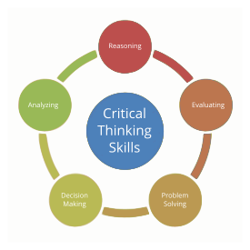
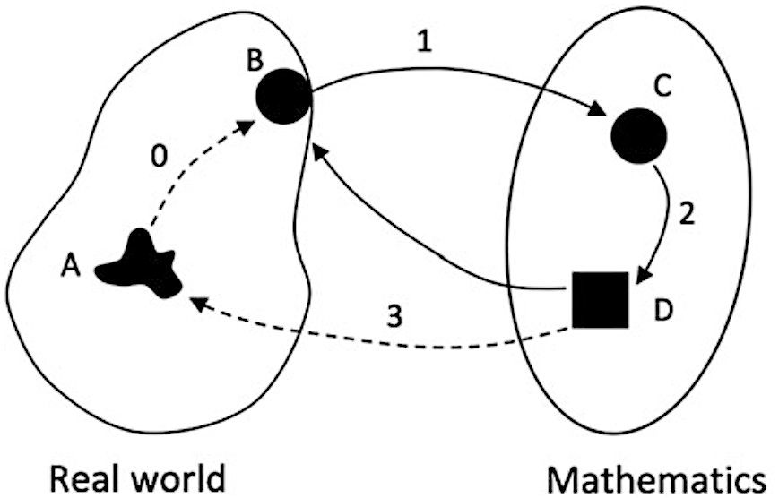
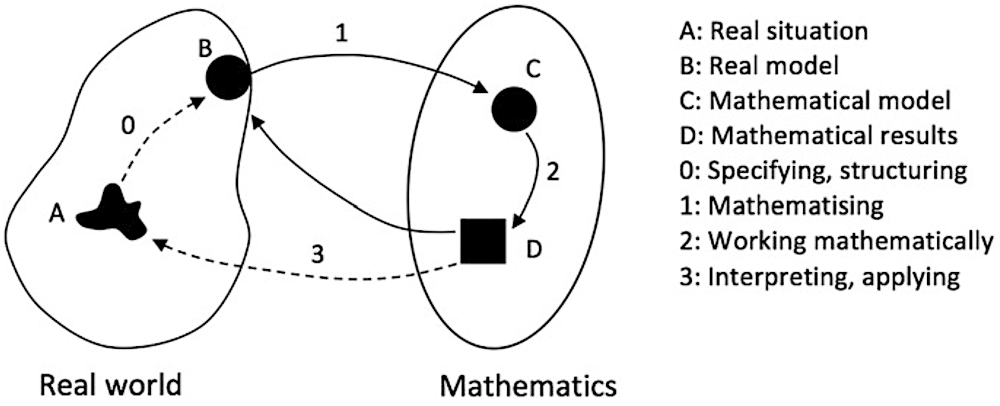
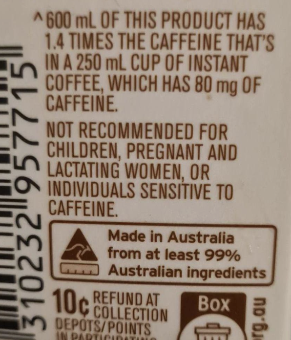

Quantitative Reasoning
1015SCG
Lecture 6
Critical thinking
Critical thinking
|

|
The Scientific Method...

... is a human endeavour and mistakes happen.
Scientific Argumentation
- We should be able to defend our ideas and expect that others will do the same.
- The opponent challenges (argument) and the proponent defends (counter-argument).
- Avoid being aggressive, argumentative, or emotional.
- Separate the argument from the person making it.
- We easily miss our own mistakes.
- The goal is improvement and better results.
Critical thinking
- The art of analyzing and evaluating thinking, with an aim of improving it.
- “Thinking about thinking”.
- Why?
- Empowers to understand and critique information.
- Provides basis for justification.
- Allows us to develop our thinking.
- Encourages responsibility.
- Encourages consistency.
- Helps with optimal decisions.
Standards, components and skills
|
Standards (qualities we value)
Components (pieces of the process)
|
 |
Special elements of critical thinking
- Extraordinary claims require extraordinary evidence.
- Falsifiability.
- Occam's razor (parsimony).
- Recognizing fallacies and avoiding them.
- Balancing induction and deduction.
Problem Posing/Solving
Problem posing
- Usual path in teaching maths:
Exposition → Examples → Exercises → Applications.
- Real life problems:
A quantitative question with no mathematical context, no data, and no direct means of answering.
Example 🐮
You have a barn 20 m by 25 m. Estimate how many cows can sleep there.
a) 5 b) 50 c) 500 d) 5000
The cycle of mathematical problem posing/solving

A: Real situation — 0. Pick relevant info.
B: Real model — 1. Mathematize the scenario.
C: Math model — 2. Do the calculations.
D: Math results — 3. Revise or return to real situation to choose a reasonable answer.
Blum, W., & Kirsch, A. (1989). The problem of the graphic artist. In W. Blum, J. S. Berry, R. Biehler, I. D. Huntley, G. Kaiser-Meßmer, & L. Profke (Eds.), Applications and modelling in learning and teaching mathematics (pp. 129–135). Chichester: Ellis Horwood.
Recall example about the barn with cows 🐮
A. Real situation: barn with cows.
B. Real model: dimensions, purpose, possible numbers.
C. Math model: compute barn area, estimate space per cow.
D. Math results: area per cow and number of cows per m².
→ Return to real situation to choose a reasonable answer.

Mathematical problem posing/solving
Useful skills:
- Maths content.
- Heuristics / strategies / rules of thumb.
- Meta-cognition:
- What are you doing?
- Why are you doing it?
- How will it help?
- Beliefs and attitudes.
🧩 Mathematical Problem Solving
- Understand the problem
- Devise a plan
- Carry out the plan
- Reflect
Source: How To Solve It, by George Polya, 2nd ed., Princeton University Press, 1957.
🧩 Mathematical Problem Solving
Step 1: Understand the problem.
- Do you understand all words?
- Can you restate it?
- What are you asked to find?
- Would a diagram help?
- Is the given information enough?
🧩 Mathematical Problem Solving
Step 2: Devise a plan (often hardest).
- Relate to similar problems.
- Use examples.
- Simplify or modify.
- Break into smaller parts.
- Work backwards.
- Use known strategies.
🧩 Mathematical Problem Solving
Step 3: Carry out the plan.
- Be patient.
- Pay attention to details.
- Don't give up too quickly.
- Revise if the plan fails.
🧩 Mathematical Problem Solving
Step 4: Reflect.
- Can you check the answer?
- Could you solve it differently?
- Does the result tell you something interesting?
- What other problems could be solved with this method?
📝 Practice 😃
Caffeine
How many 1L bottles can I drink per day?
(Recommendation: <400 mg caffeine per day.)

Caffeine
|
1. Understand the problem
|
Caffeine
|
2. Devise a plan
|
Caffeine
|
3. Carry out the plan
|
Caffeine
|
4. Reflect
|
Pizza party
Party with 10 people.
Each eats 2/3 of a pizza.
Deal: 2 pizzas for $12.
How much will I spend?
Car vs tram
Should I drive to Uni or take the tram?
Cans and bottles
Refund: 10c each.
Recycling point is 85 km away.
Car burns 6 L / 100 km.
Fuel cost: $2 per liter.
How many cans to break even?
What's their volume?
How much can I earn?
Lunch
You want healthier lunches without meal prep.
Comparing microwave meals:
Healthy brand vs supermarket brand.
Which option is better?
(Links removed; text only.)
Daily intake
Protein: 0.8 g/kg body mass.
Active people: 1.2–2 g/kg.
Avoid saturated fat and simple sugar.
Fibre: 20–40 g/day.
Calories: ~2000 kcal (varies).
Sodium: <2300 mg.
Supermarket meal vs healthy meal
Supermarket meal: $6.80.
Healthy meal: $9.99.
That's all for today!
See you in Week 7!